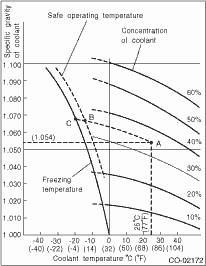
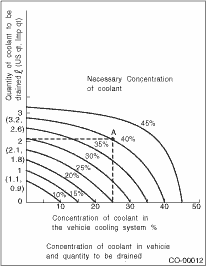

COOLING(H4SO) > Engine Coolant
1. RELATIONSHIP OF SUBARU COOLANT CONCENTRATION AND FREEZING TEMPERATURE
The concentration and safe operating temperature of SUBARU coolant is shown in the diagram. Measuring the temperature and specific gravity of the coolant will provide this information.
[Example]
If the coolant temperature is 25°C (77°F) and its specific gravity is 1.054, the concentration is 35% (point A), the safe operating temperature is −14°C (7°F) (point B), and the freezing temperature is −20°C 4°F) (point C).

2. PROCEDURE TO ADJUST THE CONCENTRATION OF THE COOLANT
To adjust the concentration of coolant according to temperature, find the proper fluid concentration in the above diagram and replace the necessary amount of coolant with an undiluted solution of SUBARU genuine coolant (concentration 50%).
The amount of engine coolant that should be replaced can be determined using the diagram.
[Example]
Assume that the engine coolant concentration must be increased from 25% to 40%. Find point A, where the 25% line of engine coolant concentration intersects with the 40% curve of the necessary engine coolant concentration, and read the scale on the vertical axis of the graph at height A. The quantity of coolant to be drained is 2.1 L (2.2 US qt, 1.8 Imp qt). Drain 2.1 L (2.2 US qt, 1.8 Imp qt) of coolant from the cooling system and add 2.1 L (2.2 US qt, 1.8 Imp qt) of the undiluted solution of SUBARU coolant.
If a coolant concentration of 50% is needed, drain all the coolant and refill with the undiluted solution only.
